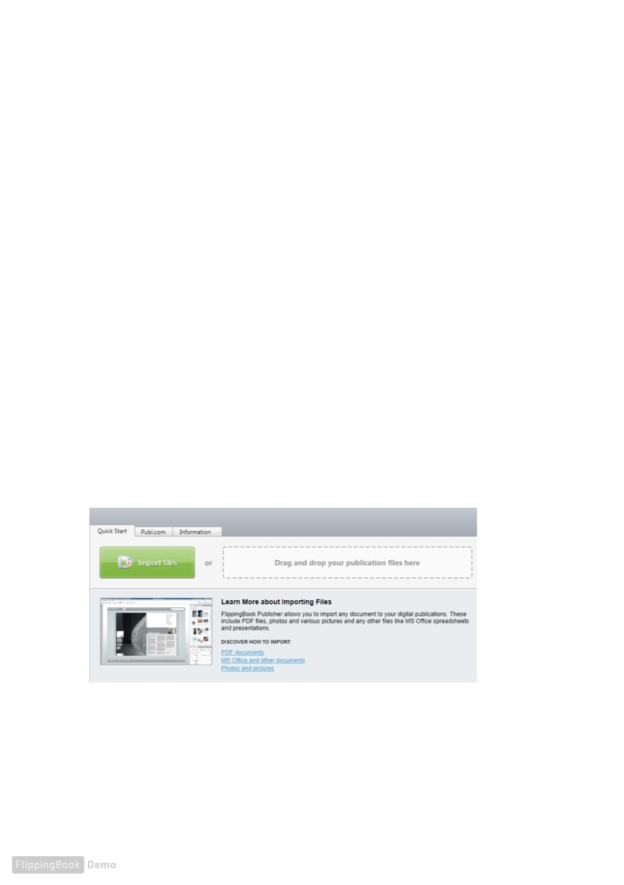

Quick Start
This chapter describes how to quickly create a publication from a PDF "le and
upload it to Publ.com.
Let’s assume that you have already installed and run your copy of Publisher 2.
IMPORTING PDF FILES
FlippingBook Publisher offers users the greatest and most powerful options for the importing of
PDF "les in the whole world market of e-publishing. Users can import documents of any type
including magazines, books, catalogues, brochures, presentations. FlippingBook Publisher provides
users with the best means of conversion so that all materials easily become great digital
publications.
Choosing the source "le
The easiest way to import PDF "les is to use the “Import Files” button on the FlippingBook Publisher
start page or drag and drop a "le from a folder directly to the marked "eld.
For user convenience, there are alternative ways of importing MS Office and other non-PDF
documents.
6
QUICK START